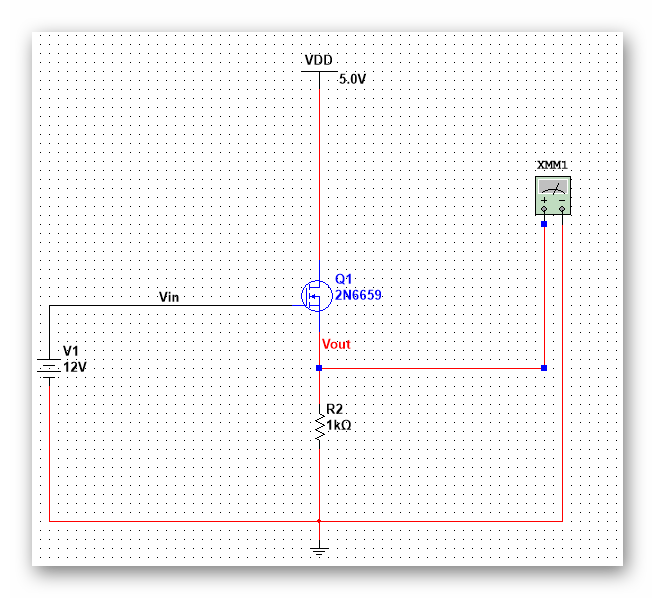

| 模拟集成电路 | |
目录： 一之MOS器件 二之单级放大器 三之差动放大器 四之电流镜偏置 五之实际电路1 六之实际电路2 七之实际电路3 八之实际电路4 九之实际电路5 十之实际电路6 十一之实际电路7 十二之实际电路8 十三之实际电路9 十四之实际电路10 十五之实际电路11 十六之实际电路12 十七之实际电路13 十八之实际电路14 返回页： 类似页：
|
七、源跟随器（共漏极放大器）将Vout下移得到的简单源跟随器 大信号分析就略过了，看一下小信号分析： 不考虑调制效应， Vout=（(Vin-Vout)*Gm-Vout*gmb)*Rs 这里要注意Vin和Vgs1的区别。 得到的增益Av= gmRs/(1+(gm+gmb)Rs) 可以看到随着Rs的增大，增益趋近于1，所以叫跟随器。当然，gmb的存在会使增益下降。 跟随器的作用就是减小小负载带来的影响。 源极电阻负反馈跟随器的的漏电流受输入的电压影响较大，漏电流的增大直接导致Vgs-Vth增大，进而影响Vout对Vin的跟随作用，一般可以采用电流源 负反馈来减小Vin对Ids的影响。 引入电流源后，非线性效应有所降低，使用S和B相连的方法也可以消除衬底的体效应（PMOS才有用），但是，Vth与源极电压之间的非线性关系还是会影响输入输出 特性。除此之外，直流电平产生的Vgs漂移也会消耗电压余度。 S跟随器的优势在于高的输入阻抗和中等的输出阻抗，可以实现小负载的过渡。 源跟随器的输出电阻并不大，限制了驱动能力，是的这种结构应用的并不多。 |
|---|---|